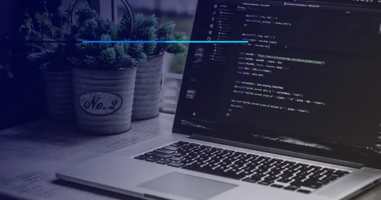

17 de Maio de 2023
Jornada à Primeira Vaga

Hoje é um dia emocionante, pois estou dando início ao meu primeiro projeto como programador front-end. Com grande entusiasmo e determinação, estou mergulhando de cabeça nessa empolgante jornada de desenvolvimento web. Estou animado para explorar todas as possibilidades e desafios que a programação front-end tem a oferecer. Com as minhas habilidades recém-adquiridas e uma paixão pela criação de interfaces incríveis e interativas, estou pronto para criar uma experiência visualmente cativante para os usuários. Estou ansioso para aplicar meu conhecimento em HTML, CSS e JavaScript, e também aprender novas tecnologias à medida que avanço nos projetos.
18 de Maio de 2023
Quem Sou Eu?
Meu nome é Caio Elias Vieira, tenho 18 anos e estou atualmente desempregado. No entanto, estou dedicando meu tempo e energia em estudar programação, com o objetivo de construir uma carreira nessa área fascinante. Desde que descobri minha paixão por tecnologia e desenvolvimento de software, tenho me empenhado em aprimorar minhas habilidades e conhecimentos. Estou mergulhado em cursos, tutoriais e projetos práticos, buscando dominar as linguagens e ferramentas necessárias para me tornar um programador competente. Acredito que a programação é uma porta de entrada para um futuro promissor, com inúmeras oportunidades profissionais e um campo em constante evolução. Estou motivado a trabalhar com programação porque me encanta a ideia de criar soluções inovadoras e impactar positivamente a vida das pessoas por meio da tecnologia. Estou determinado a transformar meu amor pela programação em uma carreira bem-sucedida e estou ansioso para explorar todas as possibilidades emocionantes que esse caminho tem a oferecer.
17 de Maio de 2023
Meu Objetivo com Programação
Olhando para o futuro, tenho grandes ambições e objetivos que estou trabalhando arduamente para alcançar. Um dos meus principais sonhos é ingressar em uma empresa como desenvolvedor front-end e contribuir para a criação de experiências digitais envolventes e de alta qualidade. Desejo aplicar minhas habilidades em HTML, CSS, JavaScript e outras tecnologias front-end para criar interfaces bonitas e intuitivas que melhorem a vida dos usuários.